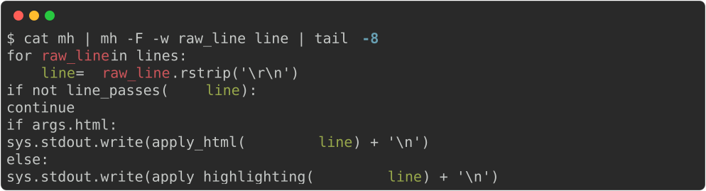
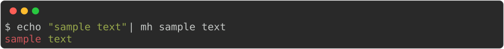
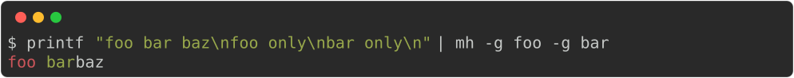
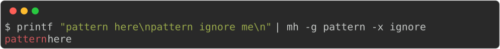
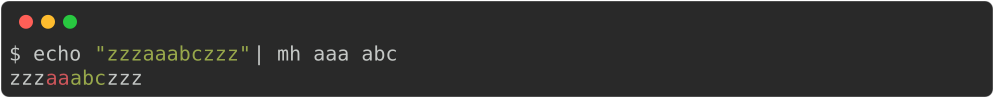
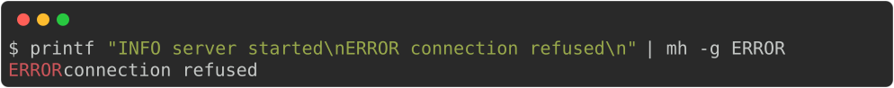
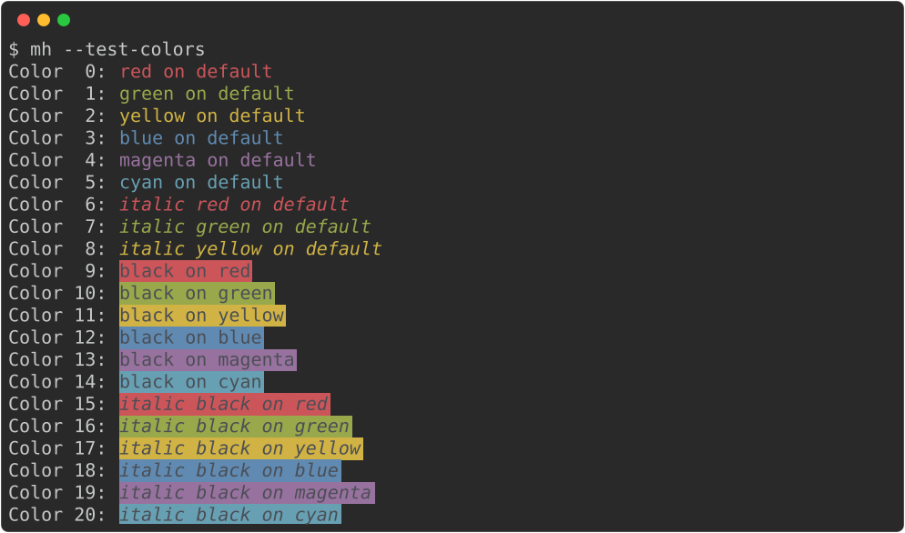

mh – Multi‑term Highlighter
Overview
mh is a lightweight tool that behaves similar to grep but highlights multiple terms using different colors.
mh can:
- Highlight unlimited number of terms (unlike GNU grep which highlights only one match)
- Filter input lines, as both
grepandgrep -vwould. - Choose pattern match between regular expressions and fixed strings (as
grep/grep -F) - Case sensitive and whole-word-only matching (as
grep -iandgrep -w) - Use user-configured set of ANSI colors.
- Auto‑rotate colors when there are more patterns than colors.
This is an indispensible tool to interactively and iteratively analyze large volumes of data such as log files, while keeping visual anchors during investigation. An analysis session usually looks like:
- use mh to process and output log file
- find an object of interest (e.g. an object id), add highlighting term to
mh - add filtering expressions to
mh - hide log lines from a chatty service
- keep log lines from a particular class
- repeat
Example - highlight variables in the script:

Installation
$ chmod +x mh
$ cp mh ~/bin/mh # or any directory on $PATH
$ mh --create-config # optional - write default ~/.config/mh/config.tomlThe script requires Python 3.8+ and only uses the standard library.
Usage
Highlight only – no filtering:

Filter lines containing both "foo" and "bar" (AND chain):

Filter but exclude lines containing "ignore":

Overlapping terms – later terms take precedence:

Filter log lines by level:

Test color palette:

Configuration
Run mh --create-config to write a default config to ~/.config/mh/config.toml:
[defaults]
line_buffered = true
ignore_case = false # true = case-insensitive (-i)
word_match = false # true = whole-word matching only (-w)
term_matching = "regexp" # "regexp" or "fixed"
mode = "highlight" # "highlight", "grep", or "exclude"
colors = [
"red on default",
"green on default",
"yellow on default",
"blue on default",
"magenta on default",
"cyan on default",
"italic red on default",
...
]Each entry is a color spec:
[bold] [italic] <fg> [on <bg>]fg and bg accept any of:
| Format | Example | Notes |
|---|---|---|
| Named color | red, bright_cyan, default |
black red green yellow blue magenta cyan white, plus bright_ variants |
| 8-bit index | 196 |
0–15: standard colors, 16–231: 6×6×6 color cube, 232–255: greyscale ramp |
| 24-bit hex | #e06c75 |
Full RGB, #rrggbb |
Use default for fg or bg to leave it unset (inherits from the terminal). The on <bg> part is optional and defaults to on default.
Examples: red, bold blue on default, italic black on red, #e06c75 on #282c34, bold bright_cyan on 235.
License
MIT – feel free to copy, modify, and distribute.